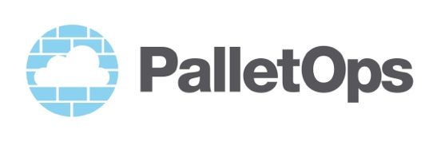
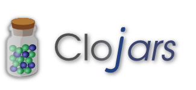
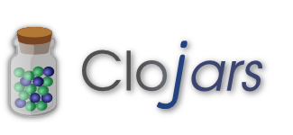

pallet.clj
Infrastructure Project File

The Infrastructure You Need
From day one.
One source, many clouds, virtualisation environments.
One source, many deployment environments.
Infrastructure Project File
README.md
pallet.clj
project.clj
src
target
test
Easy to start
In the project.clj file:
:plugins
[[com.palletops/pallet-lein "0.6.0-beta.7"]]Create a pallet.clj file:
(defproject myproject
:phases
{:configure
(plan-fn (package "postgresql-9.1"))})$ lein pallet upNow on ec2…
lein pallet add-service ec2 aws-ec2 xxxx xxxxlein pallet --service ec2 upAs your infrastructure evolves
Split out code into functions
Split out code into re-usable modules
Modules are code artifacts
Testing
(defproject myproject
:providers
{:vmfest
{:variants
[{:node-spec {:image {:os-family :ubuntu}}
:selectors #{:default :ubuntu}
...]}
:groups [...])lein pallet up --selectors ubuntulein pallet up --groups dblein pallet up --phases configure,test
Pallet
 


(require '[my.ns :refer [group1 group2]])
(defproject myproject
:groups [group1 group])pallet/src is on the classpath
Group specs
(def group1
(group-spec "group1"
:phases
{:configure
(plan-fn
(remote-file "f" :content "hello"))}
:roles #{:db}))Multiple nodes
(def group1 (group-spec...))
(def group1 (group-spec...))
(defproject myproject
:groups [group1 group])lein pallet up --roles dbWill start/stop a node for each group